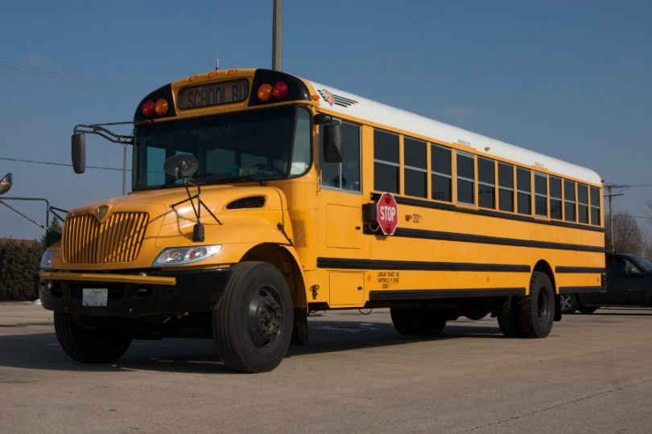
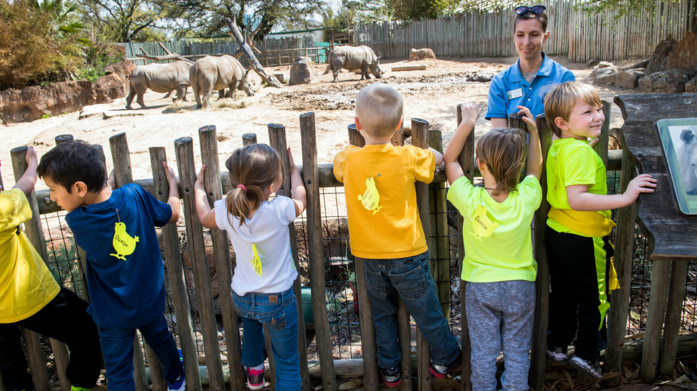
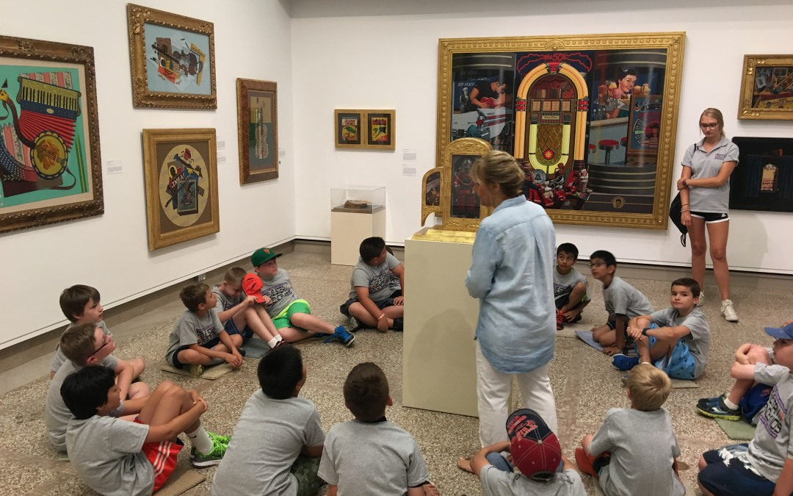

Field Trips
Fun Happy Cool Pre-School will be hosting two field trips in the school year. These field trips will serve to offer fun learning opportunities for the kids' in our school program as well as providing an enjoyable experience overall. In both field trips, the students will be supervised by both teachers and administrators from the school. If there are any safety concerns, the school advisors will call the parent(s) or guardian(s) of said kid, and the school nurse will tend to any potential issues. 
The first field trip will take place in the first semester of the school year, in early November (exact date may vary, but information will be released as the trip draws nearer) and will take students to a zoo. In this state zoo, the students will be taken to several areas to experience the most out of what the zoo has to offer. There will be lunch provided by the school during the trip, and the trip itself will last from 8:30 AM to 2:30 PM. This trip intends to open up the curiousity of the young minds of soon to be brilliant students. Here they will be able to witness species from various regions around the world. It will be both an entertaining and engaging experience. 
The second field trip, planned to take place in late March, will be a trip to the state museum. Here students will be shown exquisite artistic pieces, setting them up for creativity as the years follow. This trip, similar to the zoo field trip, will take place from 8:30 to 2:30, and lunch will be provided accordingly. Adult supervisors will take different groups of kids around varying sections of the museum, showing them the vast array of old and recent artwork at display. This field trip intends to provide an interesting experience to the students of Fun Happy Cool Pre-School, in which they will be both curious and enjoy their time at the state museum. 